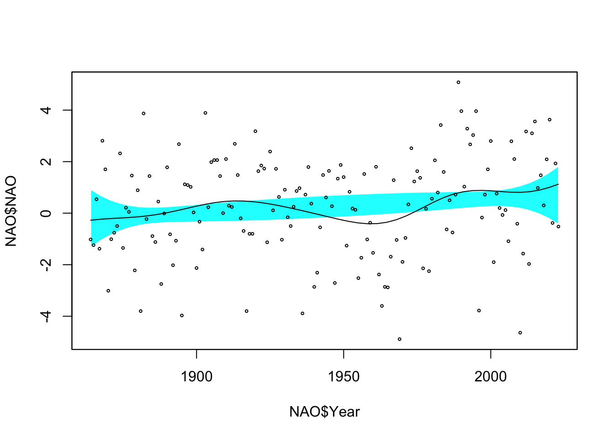

12 Flexible models
`
12.1 Methods for constructing flexible models
In the previous lecture, some ways of constructing flexible (or ‘nonparametric’) regression curves were described. There are many ways of doing this. Here are some further possibilities.
12.1.2 Splines
In mathematics, a spline denotes a function \(g(x)\) which is essentially a piecewise polynomial over an interval \((a, b)\), such that a certain number of its derivatives are continuous for all points of \((a, b)\). More precisely, \(g(x)\) must satisfy the following properties. For some given positive integer \(r\) and a sequence of points \(t_1,\ldots,t_k\), called knots, such that \(a<t_1<\ldots<t_k<b\), it is required that:
- \(g(x)\) has \(r-2\) continuous derivatives;
- the \((r-1)\)th derivative of \(g(x)\) is a step function with jumps at \(t_1,\ldots,t_k\).
Often \(r\) is chosen to be \(3\), and the term cubic spline is then used for the associated curve.
In statistics, splines are used not for data interpolation, as in numerical analysis, but for data smoothing. Specifically, the quantity \[ D = \sum_{i=1}^n \left(y_i - s(x_i) \right)^2 + \lambda \int_a^b s''(x)^2 dx , \] where \(\lambda\) is some positive constant, is used as an objective function in a minimisation problem with respect to the unknown regression function \(s(x)\) on the basis of the data \((x_i, y_i)\).
The connection between \(D\) and splines is that the mathematical function which minimises \(D\) is a cubic spline, whose specific expression depends on the data and on the choice of \(\lambda\). If \(\lambda=0\), minimisation of \(D\) corresponds to interpolation of the data, which is not a useful method of fitting the model, since the residuals are all set equal to \(0\). To avoid this, the second term in the expression of \(D\) is then inserted as a roughness penalty.
The choice of \(\lambda\) determines the relative weight attributed to the two terms, the residual sum of squares and the roughness penalty \(\int s''(x)^2 dx\). Increasing \(\lambda\) penalises fluctuations, and so produces a smoother curve. The term penalised least squares is then used in conjunction with \(D\). If \(\lambda\to\infty\), the second derivative is effectively constrained to be 0, and the outcome is then the least squares line. Hence, \(\lambda\) plays a similar role to the smoothing parameter \(h\) used in earlier sections.
The philosophy underlying this approach is an elegant and powerful one and it can be modified to apply to many other situations. Extensive discussions are given by Eubank (1988), Wahba (1990), Green and Silverman (1994) and Wood (2017).
Another way of estimating a smooth regression curve is to use a set of functions which provide a set of local building blocks. For example b-splines, which are made up on polynomial pieces, provide a convenient and efficient option. A curve estimate can then be produced by fitting the regression \[ Y_i = \beta_0 + \beta_1 b_1(x_i) + \beta_2 b_2(x_i) + \ldots + \beta_p b_p(x_i) + \varepsilon_i , \] where the \(b_j\) are the local b-spline functions. The \(b_j\) are centred at different positions along a regular grid of \(x\) values. This creates a regression problem of the usual form \(y = B \beta + \varepsilon\), where \(y\) denotes the vector of response values, \(\beta\) is a vector of unknown coefficients and \(B\) is a matrix whose columns evaluate each basis function at the observed values of \(x\) (with an initial column of 1’s, as usual, to deal with the intercept term). The solution \(\hat\beta = (B^TB)^{-1}B^Ty\) arises from standard linear model theory.
Of course, one important question is how many basis functions should be used. An attractive solution is to use a large number of basis functions but to control the complexity, or smoothness, of the model through a penalty function, in the manner discussed in smoothing splines above. Eilers & Marx (2020) describe this approach in detail. Rather than use the second derivative of the regression function as the basis of the penalty, there are advantages in penalising the sequence of coefficients through a term such as \(\lambda \sum_{j=2}^p (\beta_j - \beta_{j-1})^2\). Second-order differences can also be used and, indeed, that is a more common strategy. The penalised least squares problem then becomes to find \(\beta\) to minimise \[ (y - B\beta)^T(y - B \beta) + \lambda \beta^T D^T D \beta , \] where \(D\) is a differencing matrix. This leads to the solution \[ \hat\beta = (B^TB + \lambda P)^{-1}B^Ty \] where \(P\) denotes the penalty matrix \(D^TD\). This is referred to as a p-spline model.
If this estimate is written in the form \(\hat{y} = S y\) then the concept of approximate degrees of freedom, discussed earlier as \(tr(S)\), can be applied. This gives a more intuitive scale of complexity. Specifying the degrees of freedom leads to a unique corresponding \(\lambda\). The earlier concept of cross-validation, or the general principal of AIC, can be applied to provide a more automatic proposal for the amount of smoothing applied.
12.2 Inference with simple flexible models
Historical data on Winter NAO data was discussed in Chapter on Trends and Patterns. If we fit a linear trend this is not significant. We can ask similar questions of the flexible regression: is there evidence of change of any kind?; is there evidence that this change is not linear? The flexible regression plots below display ‘reference bands’ which indicate where we expect the smooth curve to lie if indeed there is no trend at all, and in the second case if there is only linear trend. These graphical displays can be backed up by more formal methods which compare the sums-of-squares associated with the ‘no effect’, linear and smooth models. The calculation to produce p-values are a little more complex than in the standard case of linear models.
library(rpanel)
library(tidyverse)
library(sm)
path <- rp.datalink('NAO')
NAO <- read.table(path, header = FALSE, skip = 1) %>%
dplyr::select(Year = 1, NAO = 2)
ggplot(NAO, aes(Year, NAO)) + geom_point() + geom_smooth(method = 'lm')
summary(lm(NAO ~ Year, data = NAO))$coefficients
ggplot(NAO, aes(Year, NAO)) + geom_point() + geom_smooth()
sm.regression(NAO$Year, NAO$NAO, model = 'no effect')
sm.regression(NAO$Year, NAO$NAO, model = 'linear')## Estimate Std. Error t value Pr(>|t|)
## (Intercept) -10.812202830 6.469981059 -1.671134 0.09667481
## Year 0.005689807 0.003328096 1.709628 0.08929780
## Test of no effect model: significance = 0.015
## Test of linear model: significance = 0.026
12.3 A simple additive model
Now that we have tools available to estimate smooth curves and surfaces, linear regression models can be extended to additive models as \[ y_i = \beta_0 + s_1(x_{1i}) + \ldots + s_p(x_{pi}) + \varepsilon_i, \hspace{15mm} i=1, \dots , n. \] The \(m_i\) are functions whose shapes are unrestricted, apart from an assumption of smoothness and the constraint, for identifiability, that \(\sum_i s_{j}(x_{ji}) = 0\) for each \(j\). As a consequence, we usually estimate \(\beta_0\) by \(\bar{y}\). This gives a very flexible set of modelling tools.
To see one approach to how these models can be fitted, consider the case of only two covariates, \[ y_i = \beta_0 + s_1(x_{1i}) + s_2(x_{2i}) + \varepsilon_i, \hspace{1.5cm} i=1, \dots , n. \] A rearrangement of this as \(y_i - \beta_0 - s_2(x_{2i}) = s_1(x_{1i}) + \varepsilon_i\) suggests that an estimate of component \(m_1\) can then be obtained by smoothing the residuals of the data after fitting \(\hat{s}_2\), \[ \hat{m}_1 = S_1 (y - \bar{y} - \hat{s}_2) \] and that, similarly, subsequent estimates of \(s_2\) can be obtained as \[ \hat{m}_2 = S_2 (y - \bar{y} - \hat{s}_1) . \] These smoothing operations are repeated until convergence. This is called the backfitting algorithm.
However, the regression and p-spline approaches described above allow models to be fitted directly. Each term \(s_1, s_2, \ldots\) can be represented by its own set of basis functions to create the usual linear model form \(y = B \beta\), where \(\beta\) now denotes a collections of several sets of coefficients, one for each term, and the columns of \(B\) similarly cover the basis functions for all terms in the model. Combined with a set of penalty matrices and associated penalty parameters, the direct solution \(\hat\beta = (B^TB + P)^{-1}B^Ty\) still applies, where \(P\) now denotes the sum of the individual penalty matrices weighted by their associated penalty parameters.
Here is an example of an additive model fitted to the trawl data. This uses the gam function in the mgcv package in R, which is a very powerful set of tools comprehensively described by Wood (2017). There are many options for how the model is fitted but here we will simply accept the defaults.
library(sm)
library(mgcv)
library(gratia)
ind <- (trawl$Year==0 & trawl$Zone==1)
trawl.model <- gam(Score1 ~ s(Latitude) + s(Longitude), data = trawl, subset = ind)
draw(trawl.model, residuals = TRUE)
The non-linear effect of Longitude is apparent, as we saw in earlier examples. Here the model selection methods included in mgcv have led to a proposed linear relationship with Latitude.
12.4 Inference with additive models
While models of this type provide very flexible and visually informative descriptions of the data, it is also necessary to consider how models can be compared and inferences drawn. Although we are outside the strict realm of a standard linear model, as a result of the smoothness constraints, we generally proceed by analogy with the linear model.
For an additive model, the residual sum-of-squares can easily be defined as \[ \mbox{RSS} = \sum_{i=1}^n (y_i - \hat{y}_i)^2, \] where \(\hat{y}_i\) denotes the fitted value, produced by evaluating the additive model at the observation \(x_i\). We can write the residual sum-of-squares as \[ \mbox{RSS} = \sum_{i=1}^n (y_i - \hat{y}_i)^2 = y^T (I-S)^T (I-S) y, \] where \(S\) denotes the projection matrix discussed earlier. The approximate degrees of freedom for error can be defined as \[ \mbox{df} = \mbox{tr}\{(I-S)^T (I-S)\} . \]
In an obvious notation, comparisons of two models can expressed quantitatively in \[ F = \frac{(\mbox{RSS}_2-\mbox{RSS}_1) / (\mbox{df}_2-\mbox{df}_1)} {\mbox{RSS}_1 / \mbox{df}_1} , \label{eq:add_F} \] by analogy with the \(F\)-statistic used to compare linear models. Unfortunately, this analogy does not extend to distributional calculations and no general expression for the distribution of the F-statistic is available. However, Hastie & Tibshirani (1990; sections 3.9 and 6.8) suggest that at least some approximate guidance can be given by referring the observed nonparametric \(F\)-statistic to an F distribution with \((\mbox{df}_2-\mbox{df}_1)\) and \(\mbox{df}_1\) degrees of freedom.
A different approach is to examine whether particular groups of coefficients in the regression spline, for example those associated with the building blocks for a particular term in the additive model, might all be zero. The details of this are comprehensively discussed in Wood (2017) and this is the approach implemented in mgcv.
The reef data provide a simple illustration of how model comparisons may be made. The table below indicates that both Latitude and Longitude show significant effects on the catch score.
## edf Ref.df F p-value
## s(Latitude) 1.000000 1.000000 9.648493 0.003879748
## s(Longitude) 7.023069 8.064042 26.768506 0.000000000Is the additive model sufficient or do we need an interaction term (which would simply create a smooth surface over Latitude and Longitude simultaneously)? We can examine that by adding an interaction term. The evidence for its presence is not convincing.
ind <- (trawl$Year==0 & trawl$Zone==1)
trawl.model1 <- gam(Score1 ~ s(Latitude) + s(Longitude) + ti(Latitude, Longitude),
data = trawl, subset = ind)
summary(trawl.model1)$s.table## edf Ref.df F p-value
## s(Latitude) 1.000000 1.000000 6.213004 0.0196678
## s(Longitude) 7.799202 8.444384 23.363779 0.0000000
## ti(Latitude,Longitude) 6.972077 8.728649 1.154443 0.366539212.5 Further reading
Bowman, A.W. & Azzalini, A. (1996). Applied Smoothing Techniques for Data Analysis. OUP: Oxford.
Green, P.J. and Silverman, B.W. (1994). Nonparametric Regression and Generalized Linear Models: A Roughness Penalty Approach. Chapman & Hall: London.
Hastie, T. and Tibshirani, R. (1990). Generalized Additive Models. Chapman & Hall: London.
Eubank, R.L. (1999)
Nonparametric regression and spline smoothing.
Marcel Dekker, New York.
Wood, S. (2017). Generalized additive models: an introduction with R. 2nd edition. Chapman & Hall/CRC, London.
Eilers, P.H.C. and Marx, B.D. (2020). Practical Smoothing: the joy of p-splines. Cambridge University Press.
12.6 Exercises
12.6.1 Fitting a p-spline model
Verify the solution given earlier for the value of \(\beta\) which minimises the p-splines criterion \[ (y - B\beta)^T(y - B \beta) + \lambda \beta^T D^T D \beta , \]
12.6.2 The backfitting algorithm
The sm.regression function in the sm package estimates a flexible regression curve for a single covariate and a response variables. (You can use any other function which does the same thing, if you prefer.) Write code which implements the backfitting algorithm, discussed earlier, and apply this to an additive model which relates Score1 to Latitude and Longitude in the trawl data.
You will need a convergence criterion. You might simply use a small proportionate change in the fitted values.
You will need to consult the help file for sm.regression to see what arguments are required and what is returned by the function.
12.6.3 Water quality in the Clyde estuary
The R instructions below will read a dataset containing measurements of dissolved oxygen (DO) in the River Clyde and then create a dataframe clyde4 containing a subset for a particular sampling location.
Use the gam function in mgcv to fit an additive model which relates DO to the covariates Year, Temperature and Salinity. Comment on what the fitted modell tells you about these relationships.